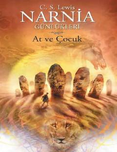

AVShastaning Narnia o'lkasiga bo'lgan qiziqarli va xavfli sarguzashtlari.
Narnia Günlükleri turkumining bir qismi bo'lgan ushbu asar Shasta ismli bolaning sarguzashtlari haqida hikoya qiladi. U o'zining haqiqiy kelib chiqishini izlab, Narnia o'lkasiga yetib borish uchun xavfli safarga otlanadi.